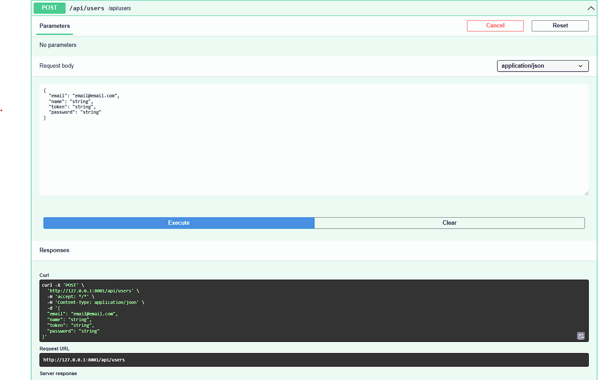
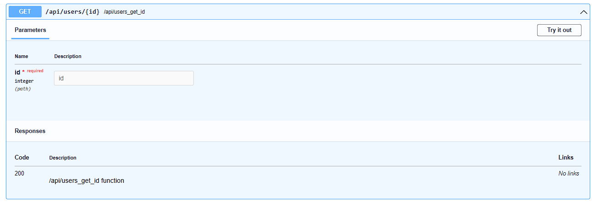
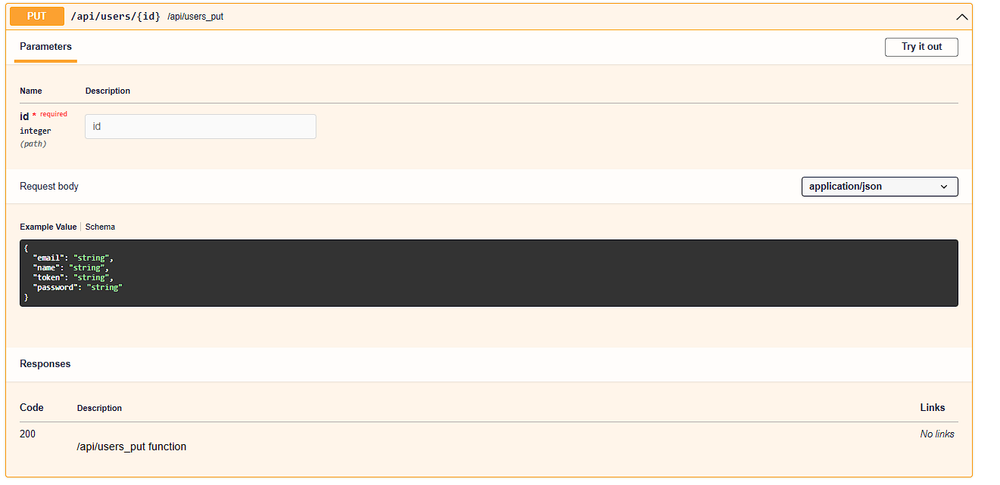

$ git clone https://github.com/seip25/Lila.git $ cd Lila $ python3 -m venv venv $ source venv/bin/activate # En Windows usa
`venv\Scripts\activate` $ pip install -r requeriments.txt $ python3 app.py # O python app.py
Explicación de app.py
Propósito: Configurar y arrancar la aplicación.
app.py es el punto de entrada principal donde se configura e inicializa la aplicación.
Explicación de app.py
# Importar los módulos necesarios y las rutas
from core.app import App
from routes.routes import routes
from routes.api import routes as api_routes
# Importar las variables de entorno para el host y el puerto
from core.env import PORT, HOST
import itertools
import uvicorn
import asyncio
# Opcionalmente, descomentar las siguientes importaciones para migraciones y conexiones de base de datos.
# Puedes habilitar la migración de la base de datos o la configuración de la conexión si es necesario.
# from database.migrations import migrate
# from database.connections import connection
# Combinar las rutas de la aplicación y las rutas de la API en una sola lista.
# Esto combina tanto las rutas regulares de la aplicación como las rutas de la API para su uso fácil.
all_routes = list(itertools.chain(routes, api_routes))
# Inicializar la aplicación con depuración activada y rutas combinadas.
# La aplicación se inicializa con el modo de depuración activado y las rutas para manejar las solicitudes.
app = App(debug=True, routes=all_routes)
# Descomentar las siguientes líneas para configurar CORS si es necesario:
# La configuración de CORS (Cross-Origin Resource Sharing) es opcional.
# cors={
# "origin": ["*"],
# "allow_credentials": True,
# "allow_methods":["*"],
# "allow_headers": ["*"]
# }
# app = App(debug=True, routes=all_routes, cors=cors)
# Función principal asincrónica para ejecutar la aplicación.
# Esta función inicia el servidor de la aplicación de manera asincrónica.
async def main():
# Descomenta la siguiente línea para ejecutar migraciones de la base de datos.
# Esto asegura que el esquema de la base de datos esté actualizado antes de arrancar la app.
# migrations = await migrate(connection)
# Iniciar el servidor Uvicorn con la instancia de la aplicación.
# La app se sirve con Uvicorn, que es un servidor ASGI.
uvicorn.run("app:app.start", host=HOST, port=PORT, reload=True)
# Punto de entrada del script para ejecutar la función principal asincrónica.
# Aquí es donde comienza la ejecución de la app.
if __name__ == "__main__":
asyncio.run(main())
Rutas
Las rutas son los puntos de acceso a la aplicación. En Lila, las rutas se definen en el
directorio
routes(por defecto, pero puede ser donde tu quieras) y se importan en
app.py para su uso. Las rutas pueden ser
configuradas para manejar solicitudes HTTP, métodos de API, y más.
Además de JSONResponse puedes utilizar HTMLResponse,
RedirectResponse y PlainTextResponse, o
StreamingResponse , Para transmitir datos en tiempo
real (útil para streaming de video/audio o
respuestas grandes).
A continuación, se muestra un
ejemplo de cómo se definen las rutas en Lila:
routes/api.py
#Importar para las respuestas JSONResponse .
from core.responses import JSONResponse
#Administra las rutas para los puntos finales de la API.
from core.routing import Router
#Inicializa la instancia del enrutador para manejar rutas de la API.
router = Router()
# Define una ruta de API simple que soporta el método GET.
@router.route(path='/api', methods=['GET'])
async def api(request: Request):
"""Api function"""
#Español: Devuelve una respuesta JSON simple para la verificación de la API.
return JSONResponse({'api': True})
Recibir parametros por GET
En esta función, recibimos un parámetro a través de la URL usando {param}.
Si el
parámetro no se envía, se asigna el valor por defecto 'default'. La
respuesta es un
JSON con el valor recibido.
from core.responses import JSONResponse # Simplifica el envío de respuestas JSON.
from core.routing import Router # Administra las rutas de la API.
from core.request import Request # Maneja solicitudes HTTP en la aplicación.
from pydantic import EmailStr, BaseModel # Valida y analiza modelos de datos para la validación de entradas.
from core.helpers import get_user_by_id_and_token
from middlewares.middlewares import validate_token
router = Router()
Uso de Middlewares y Decoradores
Los middlewares permiten interceptar solicitudes antes de que lleguen a la lógica
principal de la
API. En este ejemplo, usamos @validate_token para validar un token JWT en
el header
de
la solicitud.
Validación con Middleware
@router.route(path='/api/token', methods=['GET','POST'])
@validate_token # Middleware para validar el token JWT.
async def api_token(request: Request):
return JSONResponse({'api': True})
Validación de Datos con Pydantic
Pydantic permite definir modelos de datos que validan automáticamente la entrada del
usuario.
Además,
al especificar un modelo en la ruta, se genera documentación automática en
/docs.
Validación con Pydantic
from pydantic import EmailStr, BaseModel
class ExampleModel(BaseModel):
email: EmailStr # Garantiza que el email es válido.
password: str # Cadena de texto para la contraseña.
@router.route(path='/api/example', methods=['POST'], model=ExampleModel)
async def login(request: Request):
body = await request.json()
try:
input = ExampleModel(**body) # Validación automática con Pydantic.
except Exception as e:
return JSONResponse({"success": False, "msg": f"Invalid JSON Body: {e}"}, status_code=400)
return JSONResponse({"email": input.email, "password": input.password})
Generación Automática de Documentación
Gracias a la integración con Pydantic, la documentación de la API se genera
automáticamente y es
accesible desde /docs. También se puede generar un archivo JSON de OpenAPI
para
herramientas externas.
Generación de Documentación
router.swagger_ui() # Habilita Swagger UI para la documentación de la API.
router.openapi_json() # Genera JSON de OpenAPI para herramientas externas.
Importación de Rutas en app.py
Para usar las rutas definidas en el router, es necesario obtenerlas con
router.get_routes() e importarlas en app.py.
Importación de Rutas
routes = router.get_routes() # Obtiene todas las rutas definidas.
Archivos estáticos
Para cargar archivos estáticos(js,css,etc) se puede utilizar el método
mount().
Qué se recibirá
como parámetros que se intercambian por defecto.
path: str = '/public', directory: str = 'static', name: str = 'static'
Estático
from core.routing import Router
# Crear una instancia de Router para definir las rutas, si no se creó previamente en el archivo
router = Router()
# Montar los archivos estáticos en la carpeta 'static', url = '/public' por defecto
router.mount()
Renderizado de Plantillas (Jinja2)
En Lila, usamos Jinja2 por defecto para renderizar plantillas HTML y enviarlas al
cliente.
Con context, puedes pasar información
como traducciones, datos,
valores, listas,diccionarios o lo que necesites.
Por defecto, siempre se cargan las traducciones del archivo
translations.json,
theme en caso de que quieras usar temas,
lang como idioma predeterminado,
constantes del archivo .env o sesión,
title para el título o nombre del proyecto,
y version para gestionar versiones o evitar problemas de caché al
renderizar el
HTML
para el cliente.
Las ventajas de usar este sistema de renderizado, ya sea con traducciones o
datos
pasados
con Jinja2,
incluyen una mejor optimización SEO para tu aplicación web.
Los parámetros que puede recibir la función render de
core.templates
son los siguientes:
request:Request, template: str, context: dict = {}, theme_: bool = True,
translate: bool = True, files_translate: list = []
template es el nombre del archivo, comenzando desde el path
del directorio ubicado en templates/html/, por ejemplo:
index.html.
Buscará un archivo index.html en el directorio HTML dentro de la carpeta de
templates
(templates/html/index.html).
context recibe un diccionario con los valores que deseas pasar al template.
translate y files_translate son para traducciones. Puedes
elegir
si traducir la plantilla o no,
y especificar uno o múltiples archivos (una lista pasada a la función) para
traducir
además de translations.json.
Plantillas
from core.templates import render
# Ejemplo de renderizado de un archivo HTML con Jinja2, pasando parámetros de traducción en el contexto
@router.route(path='/', methods=['GET'])
async def home(request: Request):
response = render(request=request, template='index') # Renderiza la plantilla 'index.html' con traducciones
return response
# Ejemplo de renderizado de un archivo HTML con Jinja2, pasando parámetros de traducción en el contexto
@router.route(path='/login', methods=['GET'])
async def login(request: Request):
# Plantilla login.html dentro de la carpeta 'auth' (templates/html/auth/login.html).
# files_translate es una lista de archivos a traducir, en este caso, el archivo 'guest.json' en la carpeta locales.
# context es un diccionario con los valores a pasar a la plantilla.
response = render(request=request, template='auth/login', files_translate=['guest'], context={'example_context': 'Hola!', 'example_array': [1,2,3]})
return response
Luego, en tu archivo HTML, puedes usar las variables, includes, extends, bucles for,
condicionales
if,
etc., de Jinja2 para renderizar el contenido.
Aquí está la documentación de
Jinja2.
Esto te permite usar lo que pasaste en el contexto y las traducciones con
translate,
como se muestra en el siguiente ejemplo:
templates/html/index.html
título : {{title}}
versión : {{version}}
idioma :{{lang}}
Contexto: {{example_context}}
Markdown /HTML
Para renderizar archivos markdown se utiliza la función
renderMarkdown, que recibe los siguientes parámetros:
request,file : str , base_path:str ='templates/markdown/',css_files : list = [],js_files:list=[],picocss : bool =False
file es el nombre del archivo, comenzando desde la base_path
del
directorio
ubicado en templates/markdown/, por ejemplo: index.md.
Buscará un archivo index.md en el directorio de Markdown dentro de la
carpeta de
plantillas
(templates/markdown/index.md).
css_files y js_files son listas de archivos CSS y JS que se
cargarán
en el
archivo HTML generado.
picocss es un valor booleano que indica si se debe cargar el archivo CSS
PicoCSS.
A continuación, se muestra un ejemplo de cómo se representan los archivos
markdown
en
Lilac:
Markdown
from core.templates import renderMarkdown
@router.route(path='/markdown', methods=['GET'])
async def home(request: Request):
#Define una lista de archivos CSS para incluir en la respuesta
css = ["/public/css/styles.css"]
#Representa un archivo markdown con estilo PicoCSS
response = renderMarkdown(request=request, file='example', css_files=css, picocss=True)
return response
Internalización (Traducciones)
Las traducciones se utilizan para internacionalizar una aplicación y mostrar contenido en
diferentes
idiomas.
En Lila, las traducciones se almacenan en el directorio locales y se pueden
cargar
dinámicamente en la aplicación.
Para cargar un archivo de locales, utiliza la función translate desde
core.helpers. Luego, puedes acceder a las traducciones utilizando la
función
translate que devolvera un diccionario con todas las traducciones o
utilizar
translate_ ,para un texto o traducción en especifico, que devolvera la
traducción
que
necesita (en caso de no encontrarla
,devuelve el texto pasado).
También puedes utilizar el helper lang para que te devuelva por sessión o
configuración
de la aplicación en que idioma se esta ejecutando para dicho usuario que realizo la
solicitud.
El siguiente ejemplo muestra cómo crear y cargar un archivo de locales y traducir una
cadena de
texto.
Aquí te mostramos como utilizar dichos helpers para obtener las traducciones que dejas en
el
directorio locales
Con el parametro file_name indicas que archivo dentro de locales quieres
cargar, por
defecto siempre se caarga translations.json
Luego con key le dices que clave quieres buscar dentro de tus traducciones,
despues
el
framework buscará solo según tengas configurado en tu archivo .env o por sesión del
usuario
translations
from core.helpers import translate_
msg_error_login =translate_(key="Incorrect email or password",request=request,file_name="guest")
#Por defecto siempre se carga translations.json , si no se pasa el parametro file_name
También con translate puedes obtener todas las traducciones del archivo .
translations
from core.helpers import translate
msg =translate(request=request,file_name="guest")
#Por defecto siempre se carga translations.json , si no se pasa el parametro file_name
Modelos (SQLAlchemy)
Los modelos se utilizan para definir la estructura de los datos en la aplicación.
SQLAlchemy es el ORM
predeterminado
para
la gestión de bases de datos.
SQLAlchemy permite crear modelos de base de datos, ejecutar consultas y manejar
migraciones de
manera eficiente.
Uso de Modelos
La clase `Base`, importada desde `core.database`, sirve como base para todos los
modelos.
Los modelos heredan de `Base` para definir las tablas de la base de datos con
SQLAlchemy.
Ejemplo: Modelo de Usuario
Este ejemplo muestra cómo crear un modelo `User` utilizando SQLAlchemy.
El modelo define una tabla `users` con columnas como `id`, `name`, `email`, `password`,
`token`,
`active` y `created_at`.
models/user.py
from sqlalchemy import Table, Column, Integer, String, TIMESTAMP
from sqlalchemy.orm import Session
from core.database import Base
from database.connections import connection
from argon2 import PasswordHasher
ph = PasswordHasher()
class User(Base):
__tablename__ = "users"
id = Column(Integer, primary_key=True, autoincrement=True)
name = Column(String(length=50), nullable=False)
email = Column(String(length=50), unique=True)
password = Column(String(length=150), nullable=False)
token = Column(String(length=150), nullable=False)
active = Column(Integer, nullable=False, default=1)
created_at = Column(TIMESTAMP)
#Ejemplo de como poder utilizar SQLAlchemy para hacer consultas a la base de datos
def get_all(select: str = "id,email,name", limit: int = 1000) -> list:
query = f"SELECT {select} FROM users WHERE active =1 LIMIT {limit}"
result = connection.query(query=query,return_rows=True)#Retornar todos los elementos
return result
# Ejemplo de como poder utilizar SQLAlchemy para hacer consultas a la base de datos
def get_by_id(id: int, select="id,email,name") -> dict:
query = f"SELECT {select} FROM users WHERE id = :id AND active = 1 LIMIT 1"
params = {"id": id}
row = connection.query(query=query, params=params,return_row=True)#Retorna un elemento
return row
#Ejemplo usando abstracción de ORM en SQLAlchemy
@classmethod
def get_all_orm(cls, db: Session, limit: int = 1000):
result = db.query(cls).filter(cls.active == 1).limit(limit).all()
return result
#Ejemplo de como usar la clase para realizar consultas a la base de datos
# users = User.get_all()
# user = User.get_by_id(1)
Las funciones de middleware se utilizan para interceptar solicitudes antes de que
lleguen a la lógica principal de la aplicación.
En Lila, los middlewares se definen en el directorio middlewares (puede
modificarse a cualquier archivo y/o directorio).
Los middlewares se pueden utilizar para tareas como autenticación, registro y manejo de
errores.
Por defecto, Lila incluye 3 middlewares para iniciar cualquier aplicación. Los
middlewares se pueden utilizar con decoradores @my_middleware.
login_required, para validar que tengas una sesión firmada, para la clave
'auth' que se pasa como parámetro para poder modificarla como desees.
Si no se encuentra esta sesión, redirige a la URL que se pasa como parámetro, por
defecto es "/login".
De lo contrario, continuará su curso ejecutando la ruta o función.
Luego tenemos session_active, que se utiliza para verificar si tienes una
sesión activa.
Redirigirá a la URL que se recibe como parámetro, por defecto es
"/dashboard".
El tercero es validate_token, que se utiliza para validar un token JWT
gracias a los helpers get_token importados en
from core.helpers import get_token.
Aquí te damos varios ejemplos de cómo usar los 3, con los decoradores.
Middlewares en rutas
# Middleware para validar el token JWT.
@router.route(path='/api/token', methods=['GET', 'POST'])
@validate_token # Middleware
async def api_token(request: Request):
"""Función Api Token"""
print(get_user_by_id_and_token(request=request))
return JSONResponse({'api': True})
# Middleware para validar sesión activa
@router.route(path='/dashboard', methods=['GET'])
@login_required # Middleware
async def dashboard(request: Request):
response = render(request=request, template='dashboard', files_translate=['authenticated'])
return response
# Middleware para validar si el usuario tiene sesión activa (si el usuario tiene sesión, redirige a '/dashboard')
@router.route(path='/login', methods=['GET'])
@session_active # Middleware
async def login(request: Request):
response = render(request=request, template='auth/login', files_translate=['guest'])
return response
Middleware de Seguridad
Lila Framework incluye un ErrorHandlerMiddleware integrado que no solo
maneja excepciones no controladas, sino que también proporciona verificaciones de
seguridad robustas para proteger tu aplicación de solicitudes maliciosas. Este
middleware está diseñado para bloquear IPs sospechosas, URLs y rutas sensibles,
asegurando que tu aplicación permanezca segura.
Características
Bloqueo de IPs:
Bloquea direcciones IP que han sido marcadas por actividad maliciosa. Las IPs se
bloquean durante 6 horas por defecto.
Bloqueo de URLs:
Bloquea URLs específicas que se sabe que son maliciosas o sospechosas.
Bloqueo de Rutas Sensibles:
Bloquea el acceso a rutas sensibles como /etc/passwd,
.env, y otras.
Bloqueo de Extensiones Maliciosas:
Bloquea URLs que contienen extensiones de archivo maliciosas como .php,
.asp, .jsp y .aspx.
Detección de HTTP:
Bloquea solicitudes que contienen "http" en los parámetros de consulta
o en el contenido del cuerpo.
Configuración
El middleware utiliza tres archivos JSON ubicados en el directorio
security:
blocked_ips.json: Almacena las IPs bloqueadas con su tiempo de
expiración.
blocked_urls.json: Almacena las URLs bloqueadas con su tiempo de
expiración.
sensitive_paths.json: Almacena una lista de rutas sensibles para
bloquear.
Si estos archivos no existen, se crean automáticamente y se inicializan con valores
predeterminados:
El ErrorHandlerMiddleware se aplica automáticamente a todas las
solicitudes. Puedes personalizar su comportamiento modificando los archivos JSON en el
directorio security.
core/middleware.py
from starlette.middleware.base import BaseHTTPMiddleware
from core.responses import JSONResponse, HTMLResponse
from core.request import Request
from core.logger import Logger
from datetime import datetime, timedelta
import json
import os
def load_blocked_data(file_path, default_value):
try:
if not os.path.exists(file_path):
with open(file_path, "w") as file:
json.dump(default_value, file, indent=4)
return default_value
with open(file_path, "r") as file:
content = file.read().strip()
if not content:
with open(file_path, "w") as file:
json.dump(default_value, file, indent=4)
return default_value
try:
return json.loads(content)
except json.JSONDecodeError:
with open(file_path, "w") as file:
json.dump(default_value, file, indent=4)
return default_value
except Exception as e:
Logger.error(f"Error cargando {file_path}: {str(e)}")
return default_value
def save_blocked_data(file_path, data):
try:
with open(file_path, "w") as file:
json.dump(data, file, indent=4)
except Exception as e:
Logger.error(f"Error guardando {file_path}: {str(e)}")
async def is_blocked(blocked_data, key, request: Request):
if key in blocked_data:
expiration_time = datetime.fromisoformat(blocked_data[key]["expiration_time"])
if datetime.now() < expiration_time:
req = await Logger.request(request=request)
Logger.warning(f"Bloqueado: {key} \n {req}")
return True
return False
class ErrorHandlerMiddleware(BaseHTTPMiddleware):
def __init__(
self,
app,
blocked_ips_file="security/blocked_ips.json",
blocked_urls_file="security/blocked_urls.json",
sensitive_paths_file="security/sensitive_paths.json",
):
super().__init__(app)
self.blocked_ips_file = blocked_ips_file
self.blocked_urls_file = blocked_urls_file
self.sensitive_paths_file = sensitive_paths_file
self.blocked_ips = load_blocked_data(blocked_ips_file, default_value={})
self.blocked_urls = load_blocked_data(blocked_urls_file, default_value={})
self.sensitive_paths = load_blocked_data(sensitive_paths_file, default_value=[])
async def dispatch(self, request, call_next):
try:
client_ip = request.client.host
url_path = request.url.path
query_params = str(request.query_params)
body = await request.body()
if await is_blocked(self.blocked_ips, client_ip, request=request):
return HTMLResponse(
content="
",
status_code=403,
)
malicious_extensions = [".php", ".asp", ".jsp", ".aspx"]
if any(ext in url_path for ext in malicious_extensions):
self.blocked_ips[client_ip] = {
"expiration_time": (datetime.now() + timedelta(hours=6)).isoformat()
}
save_blocked_data(self.blocked_ips_file, self.blocked_ips)
return HTMLResponse(
content="
Acceso Denegado
Se detectó una URL maliciosa.
",
status_code=403,
)
if "http" in query_params or "http" in str(body):
self.blocked_ips[client_ip] = {
"expiration_time": (datetime.now() + timedelta(hours=6)).isoformat()
}
save_blocked_data(self.blocked_ips_file, self.blocked_ips)
return HTMLResponse(
content="
Acceso Denegado
Se detectaron parámetros de consulta maliciosos.
",
status_code=403,
)
if any(path in url_path or path in str(body) for path in self.sensitive_paths):
self.blocked_ips[client_ip] = {
"expiration_time": (datetime.now() + timedelta(hours=6)).isoformat()
}
save_blocked_data(self.blocked_ips_file, self.blocked_ips)
return HTMLResponse(
content="
Acceso Denegado
Se detectó una ruta sensible.
",
status_code=403,
)
Logger.info(await Logger.request(request=request))
response = await call_next(request)
return response
except Exception as e:
Logger.error(f"Error no controlado: {str(e)}")
return JSONResponse(
{"error": "Error interno del servidor", "success": False}, status_code=500
)
Conexiones a la base de datos
Para utilizar conexiones, necesitas importar la clase Database desde
core.database.
Con
eso podrás conectarte a tu base de datos, que puede ser SQLite, MySLQ, PostgreSQL o la
que
quieras configurar.
A continuación te dejamos el ejemplo de cómo conectarte. La conexión se cerrará
automáticamente
luego
de ser utilizada, por lo que puedes utilizarla como en este ejemplo en la variable
connection
En Lila Framework, las migraciones de bases de datos se pueden gestionar mediante
SQLAlchemy y la
configuracion de Lila para hacer de las migraciones lo mas sencillo posible, solo
utilizando el
código del framework , gracias a su clase Database. Hay dos formas
principales de
definir tablas de bases de datos: utilizando "Tabla" directamente o utilizando Modelos
con
"Base". A
continuación se incluyen explicaciones y ejemplos de ambos métodos.
Usando Table: Este método define manualmente la estructura de la tabla
con el
objeto
Table de SQLAlchemy.
migrations/migrations.py
from sqlalchemy import Table, Column, Integer, String, TIMESTAMP
from database.connections import connection
# Ejemplo de creación de migraciones para 'users'
table_users = Table(
'users', connection.metadata,
Column('id', Integer, primary_key=True, autoincrement=True),
Column('name', String(length=50), nullable=False),
Column('email', String(length=50), unique=True),
Column('password', String(length=150), nullable=False),
Column('token', String(length=150), nullable=False),
Column('active', Integer, default=1, nullable=False),
Column('created_at', TIMESTAMP),
)
Usando Modelos: Este método define las tablas como clases en Python que
heredan
de
"Base". Es el método recomendado porque ofrece más estructura y capacidades ORM.
models/user.py
from core.database import Base
from sqlalchemy import Column, Integer, String, TIMESTAMP
class User(Base):
__tablename__ = 'users'
id = Column(Integer, primary_key=True, autoincrement=True)
name = Column(String(length=50), nullable=False)
email = Column(String(length=50), unique=True)
password = Column(String(length=150), nullable=False)
token = Column(String(length=150), nullable=False)
active = Column(Integer, nullable=False, default=1)
created_at = Column(TIMESTAMP)
async def migrate(connection,refresh:bool=False)->bool:
try:
if refresh:
connection.metadata.drop_all(connection.engine)
connection.prepare_migrate([table_users])#for tables
connection.migrate()
print("Migrations completed")
return True
except RuntimeError as e:
print(e)
Ejecutando Migraciones: Para aplicar las migraciones, importa los
modelos y
ejecuta
el script de migración.
migrations.py
from models.user import User # Importar modelos para las migraciones
async def migrate(connection, refresh: bool = False) -> bool:
try:
if refresh:
connection.metadata.drop_all(connection.engine)
connection.migrate(use_base=True) # Para modelos, siempre importa los modelos en el archivo
print("Migraciones completadas")
return True
except RuntimeError as e:
print(e)
Ejecutar migraciones:Finalmente para ambos casos tanto como para Models
o Table
(se
pueden usar ambos si así lo quiere),
ejecuta la función de migración en el archivo de inicio de la aplicación:
Puedes pasarle el parametro refresh, para borrar y volver a crear las tablas
app.py
from database.migrations import migrate
from database.connections import connection
import asyncio
import uvicorn
async def main():
migrations = await migrate(connection,refresh=False) # Ejecutar migraciones para la aplicación
uvicorn.run("app:app.start", host=HOST, port=PORT, reload=True)
if __name__ == "__main__":
asyncio.run(main())
Generación sencilla de CRUD de API Rest
En Lila tenemos una forma sencilla para generar CRUDs con documentación automática,
permitiéndote crear tu API Rest de manera eficiente.
Gracias a la combinación de los modelos de SQLAlchemy y
Pydantic, es posible realizar validaciones de datos y ejecutar
consultas de
manera estructurada para la generación de la API.
Además, puedes integrar middlewares personalizados para validar tokens,
manejar
sesiones o procesar solicitudes. Con pocas líneas de código, puedes generar un CRUD de
API Rest
completamente documentado.
Si no lo has hecho, habilitar las migraciones al encender el servidor
.
Por defecto utiliza SQLite, creara un archivo de base lila.sqlite en la
raíz del
proyecto.
app.py
from database.migrations import migrate
from database.connections import connection
async def main():
migrations = await migrate(connection) # execute migrations ,for app
uvicorn.run("app:app.start", host=HOST, port=PORT, reload=True)
if __name__ == "__main__":
asyncio.run(main())
routes/api.py
from core.request import Request
from core.responses import JSONResponse
from core.routing import Router
from pydantic import EmailStr, BaseModel
from middlewares.middlewares import validate_token, check_token, check_session
from database.connections import connection # Conexión a la base de datos con SQLAlchemy
from models.user import User # Modelo 'User' de SQLAlchemy
router = Router()# Inicializa la instancia del enrutador para manejar rutas de la API.
# Modelo de Pydantic para validaciones al crear o modificar un usuario.
class UserModel(BaseModel):
email: EmailStr
name: str
token: str
password: str
# Definición de middlewares para las operaciones CRUD
middlewares_user = {
"get": [],
"post": [],
"get_id": [],
"put": [],
"delete": [check_session, check_token],#Ejemplo de middleware para sesión web con 'check_session' y jwt con 'check_token'
}
# Generación del CRUD automáticamente con validaciones y configuraciones
router.rest_crud_generate(
connection=connection, # Conexión a la base de datos
model_sql=User, # Modelo SQLAlchemy
model_pydantic=UserModel, # Modelo Pydantic
select=["name", "email", "id", "created_at", "active"], # Campos a seleccionar en las consultas
delete_logic=True, # Habilita el borrado lógico (actualiza 'active = 0' en lugar de eliminar registros)
active=True, # Filtra automáticamente los registros activos ('active = 1')
middlewares=middlewares_user, # Middlewares personalizados para cada acción CRUD
)
Puedes crear tus propios middlewares y pasarlos como lista para
personalizar la
seguridad y validaciones en cada operación de rest_crud_generate.
Para generar la documentación recuerda siempre
ejecutar luego de las rutas router.swagger_ui() y
router.openapi_json()
Parámetros de la función rest_crud_generate
A continuación, se detallan los parámetros que acepta esta función para generar el CRUD
automáticamente:
core/routing.py
def rest_crud_generate(
self,
connection,
model_sql,
model_pydantic: Type[BaseModel],
select: Optional[List[str]] = None,
columns: Optional[List[str]] = None,
active: bool = False,
delete_logic: bool = False,
middlewares: dict = None,
jsonresponse_prefix:str='',#Retorna siempre con la primer clave 'data' para una lista o diccionario
user_id_session:bool| str=False #Ejemplo para validar en las querys con 'user id' en la clausula where 'user_id'= id session_user (tomado de la sesión)
) :
Documentación automática
A continuación, se muestra un ejemplo de la documentación generada para la función
rest_crud_generate:
Dirigite a http://127.0.0.1:8001/docs, o como hayas configurado tu .env (por
HOST y
PORT)
GET - Obtener todos los usuarios
GET -Sálida de todos los usuarios
POST - Crear nuevo usuario

GET_ID - Obtener un usuario específico

PUT - Actualizar usuario

DELETE - Eliminar usuario
En este ejemplo lo hicimos con 'usuarios' , pero puedes aplicarlo como quieras según tu
lógica,
'productos','comercios',etc. Hasta modificando el core en core/routing.py
Tanto para la función por el metodo 'POST' o 'PUT',
Si el framework detecta que pasas datos en el cuerpo de la solicitud como:
'password' , los codificará automáticamente con argon2 para hacerlo seguro.
Body de ejemplo en la request a enviar :
Luego, si pasas 'token' o 'hash', con la función del helpergenerate_token_value
, genera automáticamente un token, que se guardará en base como columna 'token'
con el valor generado por la función
.
Body example :
Para los metodos 'PUT','GET' (get_id) o 'DELETE'
Es opcional según la logica de cada API REST,le puedes pasar como
query string ,
user_id
o id_user, un ejemplo seria por GET,PUT o DELETE como metodo
a la url http://127.0.0.1:8001/api/products/1?user_id=20
Donde válida que existe el ID de producto '1' pero también que pertenezca al id de
usuario '20' .
Panel de Administración
El módulo Admin permite gestionar un panel de administración para tu
aplicación. Incluye autenticación, gestión de modelos, métricas del sistema y más. Este
panel es altamente personalizable y se integra fácilmente con tu aplicación.
La idea es darte una ayuda para ir comenzando con tu panel de administración, en
core/admin.py, ahí puedes personalizar todo a tu gusto, agregando doble
autenticación,distintos tipos de seguridad,diferentes gestiones de modelos,etc
Características Principales
Autenticación: Inicio y cierre de sesión seguros para
administradores.
Gestión de Modelos: Genera automáticamente rutas y vistas para
administrar tus modelos.
Métricas del Sistema: Monitorea el uso de memoria y CPU de la
aplicación y del servidor.
Cambio de Contraseña: Permite a los administradores cambiar su
contraseña.
Logs: Permite a los administradores ver los Logs, de
tu aplicación.
Uso Básico
Para usar el panel de administración, debes importar la clase Admin y
pasarle una lista de modelos que deseas gestionar, el prefix que sera
utilizado para la url ejemplo http://127.0.0.1:8001/admin/ , también
puedes
pasarle el usuario que utilizara por defecto con user_default. Luego,
integra las rutas generadas en
tu aplicación.
app.py
from core.admin import Admin
from models.user import User
# Crear rutas de administración para el modelo User
admin_routes=Admin(models=[User],prefix="admin",user_default="admin")
# Integrar las rutas en la aplicación
from core.app import App
from routes.routes import routes
from routes.api import routes as api_routes
import itertools
all_routes = list(itertools.chain(routes, api_routes, admin_routes))
app = App(debug=True, routes=all_routes)
Usuario Administrador Predeterminado
La primera vez que inicias el panel de administración, se crea un usuario predeterminado
,que puedes modificar con el parametro user_default, en la función
Admincon las siguientes credenciales:
Usuario: admin
Contraseña: Generada automáticamente y mostrada en la consola.
Ejemplo de mensaje en la consola:
Consola
Default admin password: '9302a967cce443780477212553ae3d74625dd165a096a4ee8299dcf0c8079863126' and user is 'admin'
Rutas Generadas
El panel de administración genera automáticamente las siguientes rutas:
Inicio de Sesión: /admin/login (GET/POST)
Cierre de Sesión: /admin/logout (GET)
Cambio de Contraseña: /admin/change_password
(GET/POST)
Panel de Control: /admin (GET)
Gestión de Modelos: /admin/{model_plural} (GET)
Middleware de Autenticación
Para proteger rutas y asegurar que solo los administradores autenticados puedan acceder,
se utiliza el decorador @admin_required.